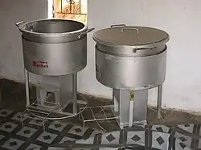
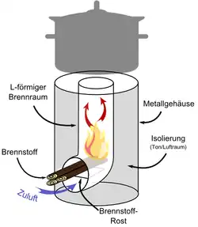
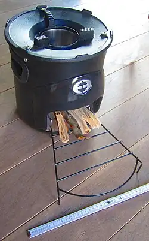

Rocket Stove

Ein Rocket Stove, Raketenofen oder Raketenherd ist ein Herd zum Zubereiten von Speisen, der durch eine besondere Anordnung des Feuerraums den Brennstoff besonders effizient verbrennt. Sie werden vorwiegend als Ersatz für offene Kochfeuer in Entwicklungsländern für den Betrieb mit Biomasse (Holz) hergestellt. Zur Raumheizung gibt es eine erweiterte Variante, den Rocket Mass Heater.
Technik

Der Feuerraum eines Rocket Stoves ist im Wesentlichen L-förmig gestaltet. An der kurzen Seite des L wird das Brennmaterial in Form von langen Holzstücken (Äste, Spaltholz) eingeschoben. Ein in den Brennraum ragender Rost dient zum einen dazu, die untere Hälfte des Querschnitts der Feuerraumöffnung für den Frischlufteintritt freizuhalten, als auch das Einlegen zu großer Holzstücke zu verhindern. Das eingelegte Holz brennt an der im Ofen befindlichen Seite ab, die Verbrennungsgase ziehen nach oben in dem langen Teil des L ab und werden dort nachverbrannt. Der gesamte Feuerraum ist zur Isolierung meist mit Ton feuerfest ausgekleidet, seltener mit säurefesten Edelstählen. Durch die Isolierung wird eine hohe Verbrennungstemperatur erreicht, die sowohl die Effizienz des Herdes steigert, als auch eine möglichst vollständige Verbrennung und damit eine Reduktion von gesundheitsgefährdendem Staub/Feinstaub, Kohlenmonoxid und unverbrannten Kohlenwasserstoffen ermöglicht.[1]
Rocket Stoves für den festen Einbau in Feuerstellen bestehen im Wesentlichen aus einem vorgefertigten Ton-Brennraum, der vor Ort in eine Außenstruktur eingebaut wird. Die mobile Variante besitzt zusätzlich ein Gehäuse aus Stahlblech mit einer Topfaufnahme, einer Aufstellfläche und Griffen.
Einsatz in Entwicklungsländern

Von einer Vielzahl von staatlichen und nichtstaatlichen Entwicklungshilfeorganisationen wie der GIZ werden durch die Globale Allianz für saubere Kochherde gelenkte Programme zur Verbesserung der Lebensbedingungen durch effizientere und gesündere, teilweise auch lokal herstellbare Herde unterhalten. Herde nach dem Rocket Stove-Prinzip lassen sich relativ einfach herstellen und bedeuten gegenüber einem offenen Kochfeuer eine deutliche Einsparung von Brennstoff bei gleichzeitiger Verringerung der gesundheitsgefährdenden Bestandteile im Abgas.
Herstellung
Die feuerfeste Auskleidung des Feuerraums kann meist aus lokal vorhandenem Ton geformt und dann gebrannt werden. Häufig wird dies durch Frauen erledigt, die dadurch ihren sozialen Status und ihre finanzielle Situation verbessern können. Der Zuschnitt der äußeren Bleche und die Montage kann durch lokale Schmiede erfolgen, da nur wenig Werkzeug benötigt wird. Es gibt auch eine Vielzahl von Anbietern, die Rocket Stoves industriell herstellen und ins jeweilige Einsatzgebiet exportieren.
Akzeptanz
Der jeweilige Ofen muss sehr genau auf die lokalen Verhältnisse (zum Beispiel auf das Kochen im Sitzen oder Stehen, das Kochen oder Braten der Speisen, die Sichtbarkeit des Feuers) abgestimmt sein, damit er auch tatsächlich genutzt wird und effizient arbeitet.
Quellen
- Partnership for Clean Indoor Air – Test Results of Cook StovePerformance. (PDF; 15 MB) Aprovecho Research Center, United States Environmental Protection Agency; abgerufen am 17. September 2015
- Evaluation of Manufactured Wood-Burning Stoves in Dadaab Refugee Camps, Kenya. (PDF; 2,7 MB) USAID, Februar 2010; abgerufen am 30. September 2010
- Cooking with Firewood – Beschreibung und Bauanleitungen, energypedia.info; abgerufen am 17. September 2015
Einzelnachweise
- ↑ Reduktion des Feinstaubs PM2.5 gegenüber der offenen Feuerstelle bei den Rocket Stoves 43% (Envirofit) und 24 % (Ecozoom), Abnahme der Kohlenmonoxid-Konzentration über 48h um 35 % (Envirofit) und 13 % (Ecozoom), in: Fuyuen Yip – Evaluation of Acceptability and Performance of Stove Options for Reducing Household Air Pollution in Rural West Kenya. (PDF; 2,0 MB) Centers for Disease Control and Prevention, USA; abgerufen am 30. Juli 2024.
- Gargerät
- Ofen
- Entwicklungszusammenarbeit